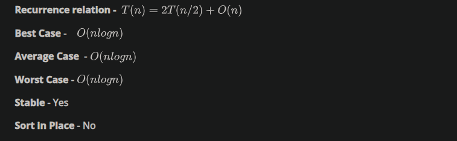

Notations to represent complexity The notation are mathematical notations that are commonly used to describe the time complexity of an algorithm or the upper and lower bounds of how an algorithm's running time grows as the input size grows.
Big-Oh(O) - Upper bound:
Big O notation describes the upper bound of an algorithm's running time. Specifically, we use the notation to describe the maximum growth rate of an algorithm's running time. This means that the algorithm's running time will not grow faster than some constant multiple of as the input size grows.
Omega( $ \Omega $) - Lower bound:
Omega notation, on the other hand, describes the lower bound of an algorithm's running time. Specifically, we use the notation to describe the minimum growth rate of an algorithm's running time. This means that the algorithm's running time will not grow slower than some constant multiple of as the input size grows.
Theta( $ \theta$ ) - Tightly bound:
Theta notation describes both the upper and lower bounds of an algorithm's running time. Specifically, we use the notation to describe the tight bound of an algorithm's running time. This means that the algorithm's running time will grow at the same rate as some constant multiple of as the input size grows.
n = 500
s = 0
for i in range(n):
s = s + 1
print(f" Big0 n = {n} s value {s}")
s = 0
for i in range(n):
for j in range(n):
s = s + 1
print(f" Big0 n^2 = {n**2} s value {s}")
s = 0
for i in range(n):
for j in range(n):
for k in range(n):
s = s + 1
print(f" Big0 n^3 = {n**3} s value {s}")
Big0 n = 500 s value 500
Big0 n^2 = 250000 s value 250000
Big0 n^3 = 125000000 s value 125000000
Binary Search
Algorithm: Start with a sorted list and a target value.
Set the low and high pointers to the first and last indices of the list, respectively.
While the low pointer is less than or equal to the high pointer:
A. Calculate the middle index as the average of the low and high pointers (round down if necessary).
B. If the target value is equal to the middle element of the list, return the middle index.
C. If the target value is less than the middle element, set the high pointer to the index before the middle index.
D. If the target value is greater than the middle element, set the low pointer to the index after the middle index.
If the target value is not found in the list, return False (or some other indication that the value is not present).
def merge(first_list , second_list) -> list :
sorted_list = []
first_pointer , second_pointer = 0 , 0
while first_pointer < len(first_list) and second_pointer < len(second_list):
if first_list[first_pointer] < second_list[second_pointer]:
sorted_list.append(first_list[first_pointer])
first_pointer+=1
else:
sorted_list.append(second_list[second_pointer])
second_pointer+=1
sorted_list.extend(first_list[first_pointer:])
sorted_list.extend(second_list[second_pointer:])
return sorted_list
def mergesort(L):
n = len(L)
if n==1:
return L
left_half = mergesort(L[ : n//2])
right_half = mergesort(L[n//2:])
sorted_list = merge(left_half, right_half)
return sorted_list
27952
import sys
import random
import os
os.chdir("..")
os.chdir("..")
print(f" CWD : {os.getcwd()}")
from driver_folder.time_driver import TimerError
CWD : /home/pk/Desktop/gitmaster/PDSA
time taken:7.14799971319735e-05
time taken:0.013598621997516602
-0.011775112012401223
def binarysearch(L , v ):
# L is sorted list
low , high = 0 , len(L)-1
while low <= high:
mid = (low+high)//2
if L[mid] < V:
low = mid+1
elif L[mid] > v:
high = mid -1
else:
return True
return False
True
time taken:0.0001255530078196898
T = TimerError()
T.start()
print(binarysearch(L, V))
end_time = T.elapsed()
print(f"time taken:{end_time}")
True
time taken:0.00010096999176312238
def binarysearch(L, v , low , high):
if high - low < 0 :
return False
mid = (high+low)//2
if v == L[mid]:
return True
if v < L[mid]:
return binarysearch(L , v , low , mid-1)
else:
return binarysearch(L , v , mid+1 , high)
T = TimerError()
T.start()
print(binarysearch(L, V , low , high))
end_time = T.elapsed()
print(f"time taken:{end_time}")
True
time taken:7.534401083830744e-05
def binarysearch(L,v):
if L == []:
return(False)
mid = len(L)//2
if v == L[mid]:
return mid
if v < L[mid]:
return(binarysearch(L[:mid],v))
else:
return(binarysearch(L[mid+1:],v))
T = TimerError()
T.start()
print(binarysearch(L, V ))
end_time = T.elapsed()
print(f"time taken:{end_time}")
0
time taken:0.00010571499296929687
Selection sort
def selection_sort(L):
n = len(L)
if n <=1 :
return L
for i in range(n): # n
minpos = i
for j in range(i+1, n): # n (n-1)
if L[j] < L[minpos]:
minpos = j
L[i] , L[minpos] = L[minpos] , L[i]
return L

time taken:0.0008929939940571785
T = TimerError()
T.start()
_ = selection_sort(J)
end_time = T.elapsed()
print(f"time taken:{end_time}")
time taken:0.9937963989941636
insert sort
def Insertsort(L):
n = len(L)
if n <=1:
return L
for i in range(n):
j = i
while (j>0 ) and L[j] < L[j-1]:
L[j] , L[j-1] = L[j-1] , L[j]
j-=1
return L
J = L.copy()
T = TimerError()
T.start()
_ = Insertsort(J)
end_time = T.elapsed()
print(f"time taken:{end_time}")
time taken:1.605617697990965
def merge_1(A,B): # Merge two sorted list A and B
(m,n) = (len(A),len(B))
(C,i,j) = ([],0,0)
#Case 1 :- When both lists A and B have elements for comparing
while i < m and j < n:
if A[i] <= B[j]:
C.append(A[i])
i += 1
else:
C.append(B[j])
j += 1
#Case 2 :- If list B is over, shift all elements of A to C
while i < m:
C.append(A[i])
i += 1
#Case 3 :- If list A is over, shift all elements of B to C
while j < n:
C.append(B[j])
j += 1
# Return sorted merged list
return C
# Recursively divide the problem into sub-problems to sort the input list L
def mergesort_1(L):
n = len(L)
if n <= 1: #If the list contains only one element or is empty return the list.
return(L)
Left_Half = mergesort_1(L[:n//2]) #Recursively sort the left half of the list
Right_Half = mergesort_1(L[n//2:]) #Recursively sort the rightt half of the list
Sorted_Merged_List = merge_1(Left_Half, Right_Half) # Merge two sorted list Left_Half and Right_Half
return(Sorted_Merged_List)
J = L.copy()
T = TimerError()
T.start()
_ = mergesort(J)
end_time = T.elapsed()
print(f"time taken:{end_time}")
time taken:0.015720170005806722
J = L.copy()
T = TimerError()
T.start()
_ = mergesort_1(J)
end_time = T.elapsed()
print(f"time taken:{end_time}")
time taken:0.008167273001163267
def merge_1(A,B):
(m,n) = (len(A),len(B))
(C,i,j) = ([],0,0)
global count
#Case 1 :- When both lists A and B have elements for comparing
while i < m and j < n:
count +=1
if A[i] <= B[j]:
C.append(A[i])
i += 1
else:
C.append(B[j])
j += 1
#Case 2 :- If list B is over, shift all elements of A to C
while i < m:
count +=1
C.append(A[i])
i += 1
#Case 3 :- If list A is over, shift all elements of B to C
while j < n:
count +=1
C.append(B[j])
j += 1
# Return sorted merged list
return C
count = 0
L = [1,2,3]
J = [4,5, 6]
merge_1(L, J)
print(len(L), len(J), count )
3 3 6
def Insertsort(L):
global count
n = len(L)
if n <=1:
return L
for i in range(n):
j = i
while (j>0 ) and L[j] < L[j-1]:
L[j] , L[j-1] = L[j-1] , L[j]
count +=1
j-=1
return L
count = 0
L = [38, 28, 43, 22, 112, 33, 39]
Insertsort(L)
[22, 28, 33, 38, 39, 43, 112]
9
def merge_1(A,B):
(m,n) = (len(A),len(B))
(C,i,j) = ([],0,0)
global count
#Case 1 :- When both lists A and B have elements for comparing
while i < m and j < n:
count +=1
if A[i] <= B[j]:
C.append(A[i])
i += 1
else:
C.append(B[j])
j += 1
#Case 2 :- If list B is over, shift all elements of A to C
while i < m:
C.append(A[i])
i += 1
#Case 3 :- If list A is over, shift all elements of B to C
while j < n:
C.append(B[j])
j += 1
# Return sorted merged list
return C
count = 0
L1 =[4,5,6]
L2=[1,2,3]
L3 = [7,9,11]
L4 = [8,10,12]
merge_1(merge_1(L1, L2), merge_1(L3, L4))
print(count )
14